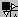

Lorsque vous cliquez sur un objet, Xwin affiche la boîte correspondante. Celle-ci est munie de poignées qui vont permettre de modifier sa taille ou de la déplacer. Lorsque le curseur de la souris passe sur une des poignées, il change de forme. Vous pouvez alors, en gardant le bouton gauche de la souris enfoncé, soit déplacer la boîte, soit modifier sa taille. Les actions correspondant aux poignées sont :
|
Poignée supérieure gauche |
Permet de déplacer l'objet.  permettant de déplacer l'objet uniquement sur la verticale ou l'horizontale ; il faut pour cela placer le curseur souris sur l'un des triangles donc légèrement à droite ou plus bas que le carré noir. |
|
Poignée inférieure gauche |
Permet de modifier la taille de la boîte, dans le sens vertical uniquement. |
|
Poignée supérieure droite |
Permet de modifier la taille de la boîte, dans le sens horizontal uniquement. |
|
Poignée inférieure droite |
Permet de modifier la taille de la boîte dans les deux sens, horizontal et vertical. |
Remarques :
Si plusieurs objets sont sélectionnés, le déplacement d'un objet quelconque s'appliquera à tous les objets sélectionnés.
Pour ne déplacer que l'objet pointé par la souris, maintenez la touche Maj enfoncée.
Le déplacement peut également se faire avec les touches fléchées.
En maintenant la touche Maj enfoncée, les touches fléchées permettent de changer la taille des boîtes.
Les modifications concernant la position et la taille des objets peuvent être annulées (Ctrl+Z).